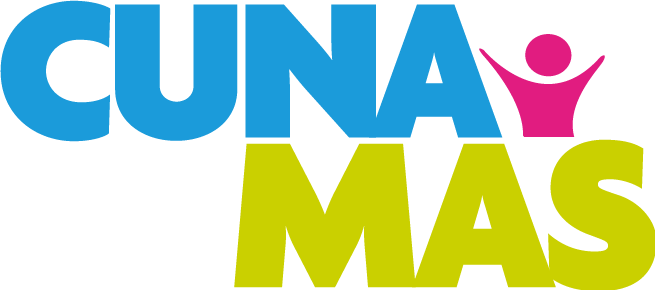
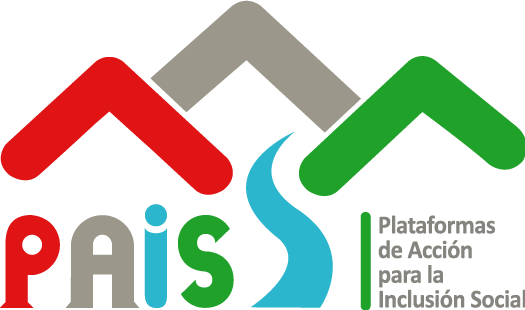
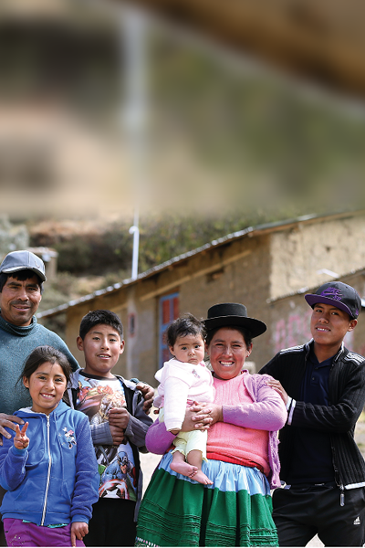
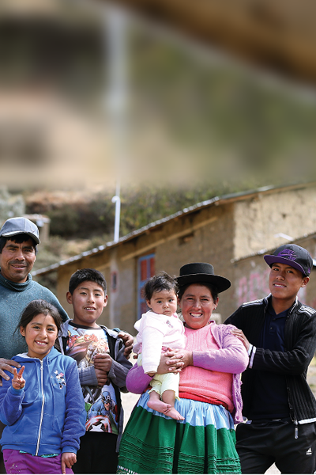

Programa Nacional PENSIÓN 65
Entregamos una subvención económica de S/ 250.00 soles cada 2 meses para los
adultos mayores en extrema pobreza. Desde el bimestre mayo-junio de 2025, la población usuaria
recibe S/100 adicionales, haciendo un total de S/350 para el presente año, incremento aprobado en la
Ley de Presupuesto del Sector Público para el Año Fiscal 2025.
Más Información
Programa Nacional CONTIGO
Brindamos una pensión no contributiva de S/ 300.00 soles a personas con
discapacidad severa en situación de pobreza o pobreza extrema, cada dos meses, con la finalidad de
contribuir en la mejora de la calidad de vida.
Más Información
Programa Nacional JUNTOS
Promovemos que las mujeres gestantes, niñas, niños y adolescentes de los hogares
más pobres, con su participación y compromiso voluntario, accedan a la salud preventiva
materno-infantil y a los servicios de escolaridad sin deserción. Por el cumplimiento de sus
corresponsabilidades, se les abona un incentivo monetario de S/ 100.00 mensuales, con entrega
bimestral.
Más Información
Programa Nacional CUNA MÁS

El Programa Nacional Cuna Más tiene como objetivo mejorar el desarrollo infantil de
niñas y niños menores de 36 meses de edad, en localidades en situación de pobreza y pobreza extrema.
De esta manera, procuramos contribuir a superar las brechas en su desarrollo cognitivo, social,
físico y emocional
Más Información
Programa Nacional WASI MIKUNA
Somos un programa del Ministerio de Desarrollo e Inclusión Social (Midis) que
garantiza el servicio alimentario durante los días de labores escolares a los usuarios del Programa,
respetando la tradición culinaria y diversidad alimentaria y las características del servicio
educativo, con la participación activa de los padres de familia y la comunidad educativa.
Más Información
Programa Nacional FONCODES
Gestionamos programas y proyectos de desarrollo productivo e infraestructura
económica y social, orientados hacia la población en situación de pobreza y pobreza extrema,
vulnerabilidad o exclusión, en el ámbito rural y urbano, articulados territorialmente en alianza con
los actores comprometidos con el desarrollo local.
Más Información
Programa Nacional PAIS

El Programa Nacional Plataformas de Acción para la Inclusión Social (PAIS) facilita
y articula la prestación de servicios de programas, proyectos y actividades en materia social,
económica y productiva de entidades públicas y privadas, con la finalidad de mejorar la calidad de
vida de la población rural y rural dispersa.
Más Información

 
